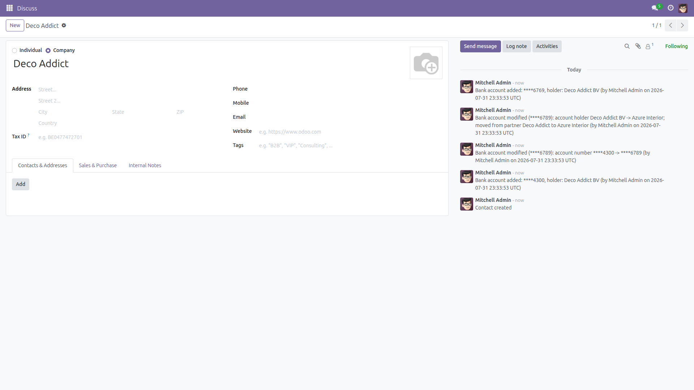
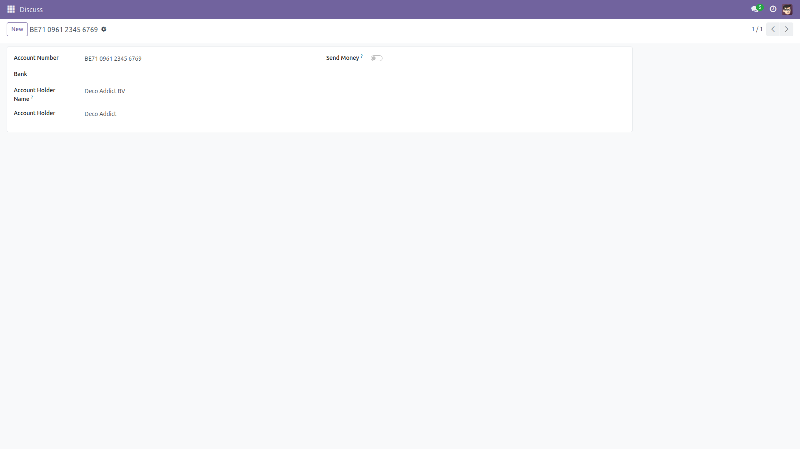
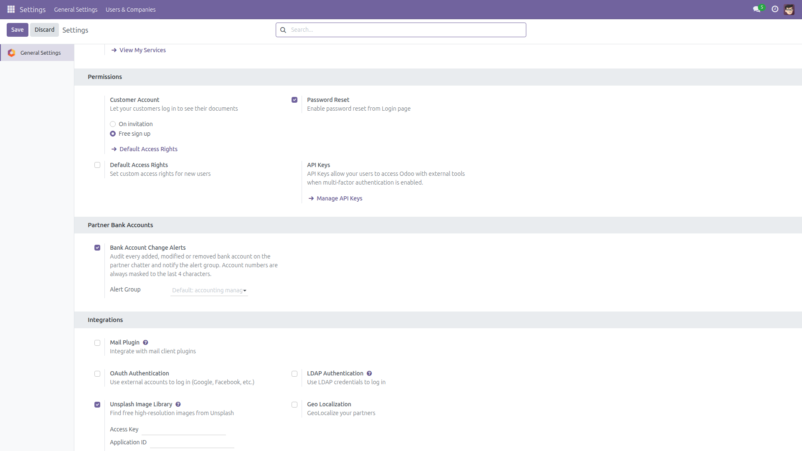

Partner Bank Change Alert
Every bank detail change: audited, masked, notified.
Changed-bank-detail invoice fraud is the classic accounts-payable scam: someone edits a vendor's bank account and the next payment quietly goes to the wrong hands. Out of the box, Odoo keeps no visible trail of that edit and warns nobody. This module posts an audit message on the partner's chatter for every added, modified or removed bank account and notifies the people who should know — the moment it happens.
Free and open source (LGPL-3), Odoo 14.0 through 19.0.
- Full audit trail on the chatter — who changed what, and when, for every create, edit and deletion of a bank account.
- Account numbers always masked — only the last 4 characters are ever shown (
****1234), old and new value alike.
- Instant notification — a configurable alert group (accounting managers by default) is notified on every change, without spamming the partner's followers.
- Repointing is a red flag — moving a bank account to another partner alerts BOTH the old and the new partner's chatter.
- Trust switch audited — flipping the "Send Money" flag (trusted / untrusted for outgoing payments, Odoo 16.0+) is alerted too.
- Never blocks business — alerts are best-effort: a failure to post is logged loudly but the bank operation always goes through.
- Multi-company aware — group members are only notified about bank accounts of companies they belong to; company-less accounts notify the whole group.
- Lightweight — depends only on standard modules (
mail, base_setup); works with or without the accounting app.
Screenshots

Every bank account change lands on the partner chatter: added, modified (old and new masked numbers), and moved to another partner — with author and timestamp.

A normal partner bank account: the module watches the account number, holder, bank and partner on every create, write and unlink.

Settings → General Settings → Partner Bank Accounts: one switch and one alert group.
Installation
- Open Apps, search for Partner Bank Change Alert and click Install.
- Only standard modules (
mail, base_setup) are required. Alerts are active immediately with sensible defaults.
Configuration
- Go to Settings → General Settings and find the Partner Bank Accounts block.
- Toggle Bank Account Change Alerts on or off (on by default).
- Pick the Alert Group to notify. Empty means the default: the accounting managers when the accounting app is installed, otherwise the Settings administrators.
Usage
- Add, edit, move or delete any partner bank account, from any screen.
- An internal note appears on the affected partner's chatter with the action, the masked number(s), the author and the timestamp.
- Members of the alert group are notified (inbox or email, per their own notification preference) without the partner's other followers being spammed.
- Only meaningful fields trigger an alert: account number, holder name, bank and partner. Cosmetic edits stay silent.
Honest limitations
- The audit trail lives in Odoo's chatter — someone with direct database access can still edit data below Odoo's radar.
- Notifications are best-effort by design and never block the underlying operation; a failed alert is logged at ERROR level in the server log.
- This complements — it does not replace — the untrusted-account payment flagging that Odoo 16+ accounting applies at payment time. Odoo 14 and 15 have no such flagging, which is exactly where this module helps most.
Version notes
Identical behavior on every supported series (14.0 – 19.0). The "Send Money" trust switch only exists from Odoo 16.0, so its audit applies on 16.0 and later.
License: LGPL-3 · Source on GitHub · Issues and contributions welcome.